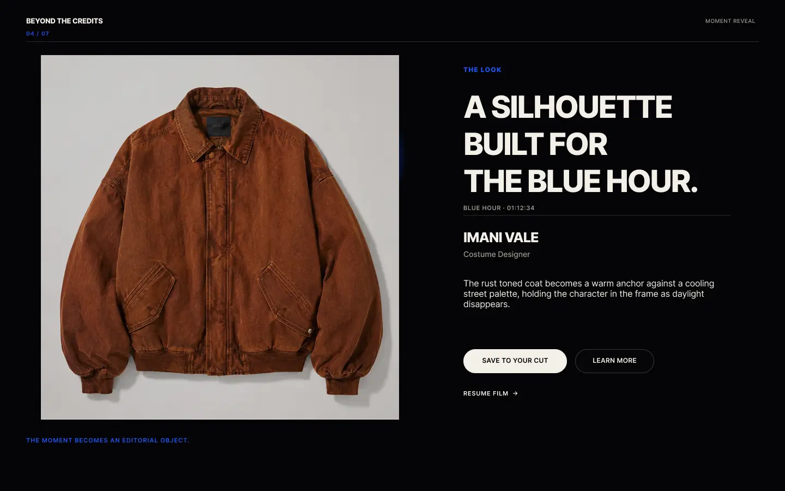

Film → moment → creator Flagship project001Interactive streaming2026
Beyond the Credits
A streaming experience that lets viewers collect the looks, sounds, compositions, and environments that move them, then transforms those moments into a personal visual archive. Every creative contribution remains properly credited.